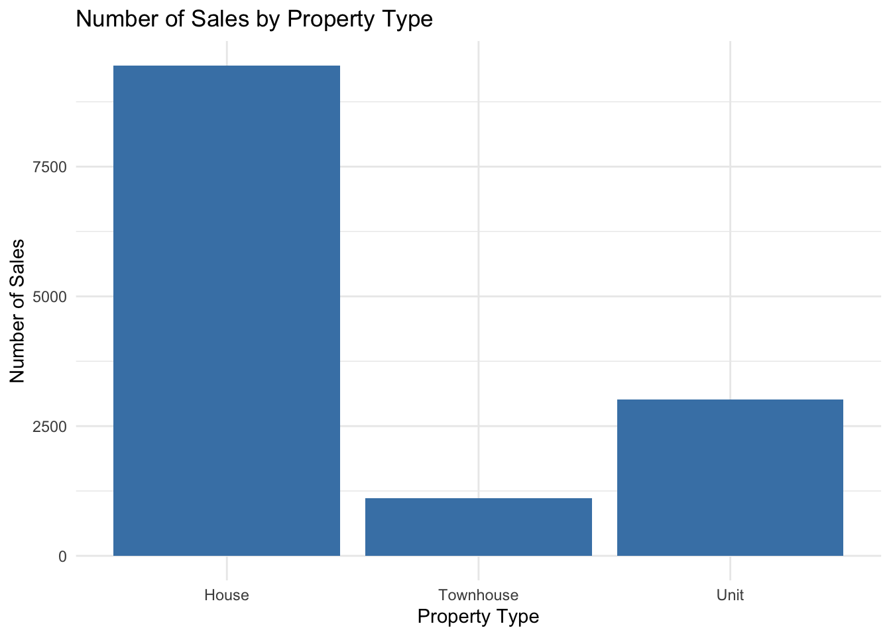
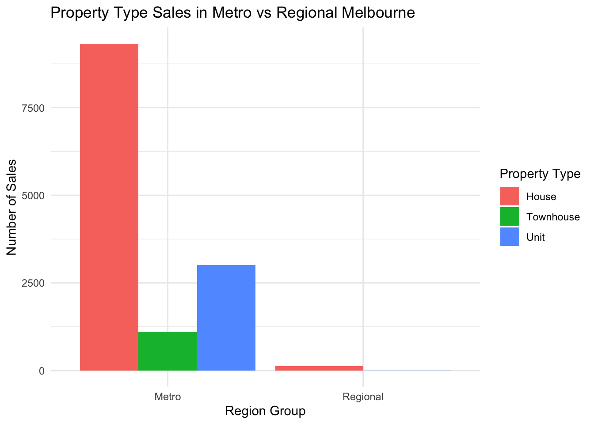
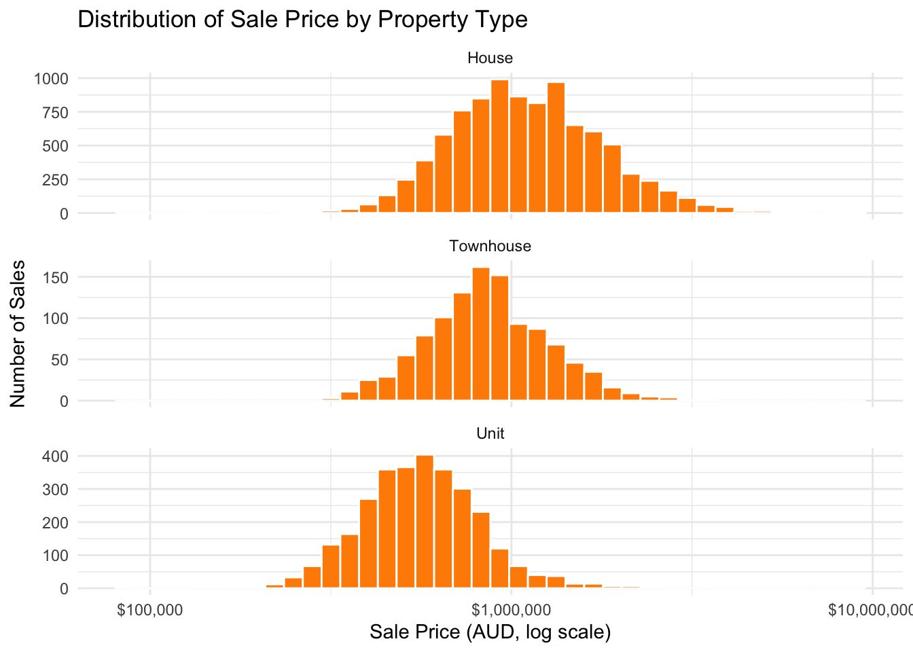
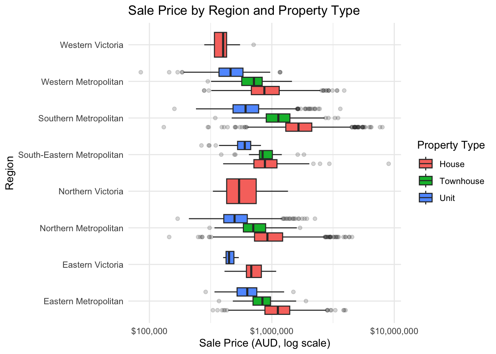
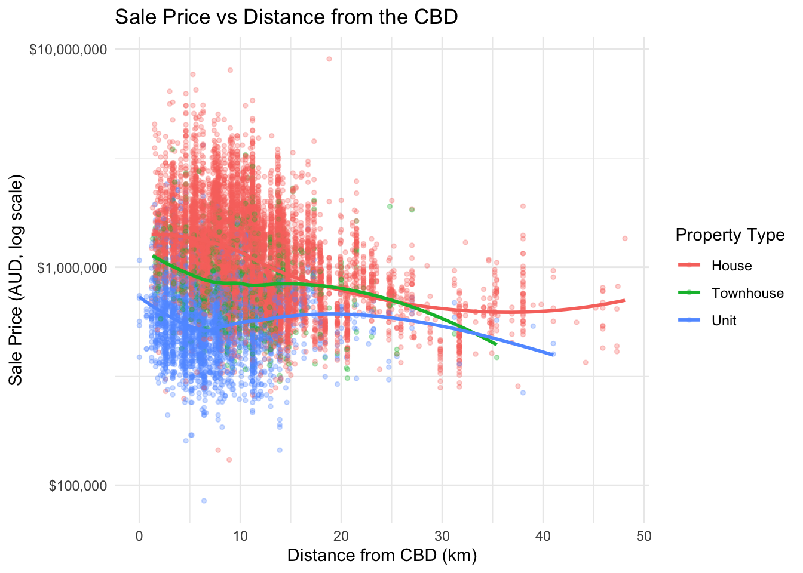
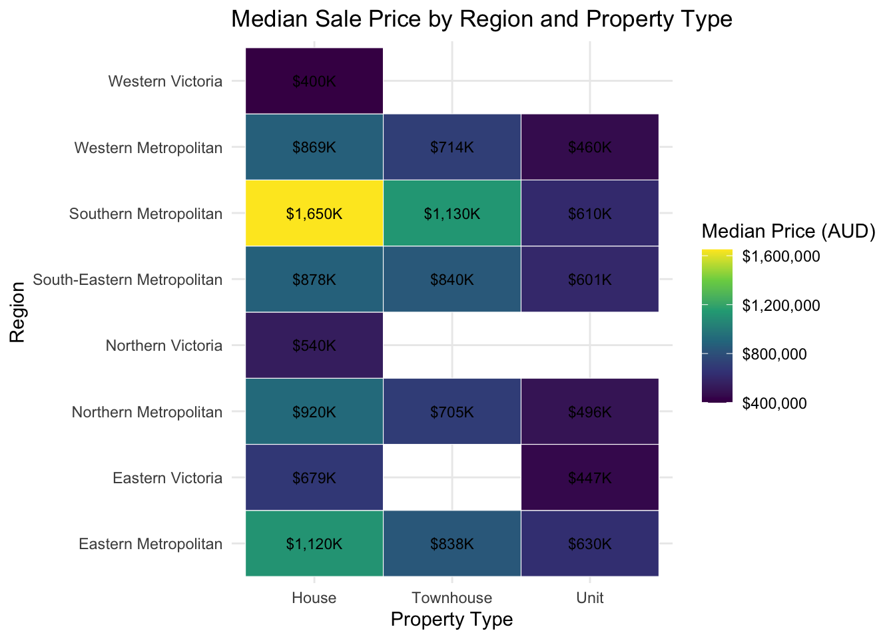
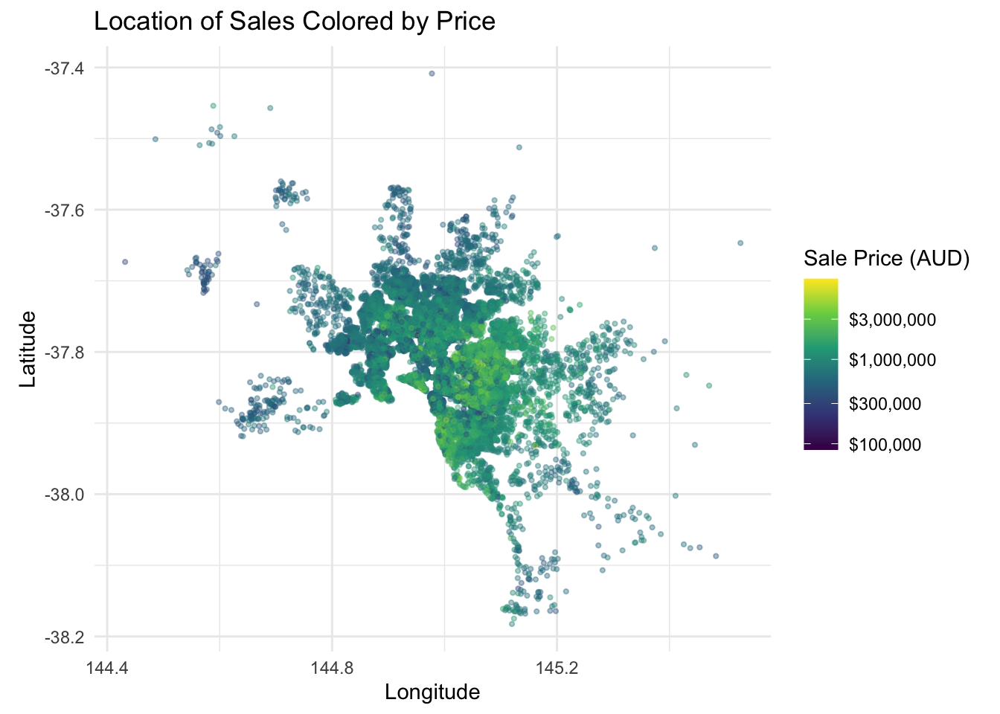

library(tidyverse)
source("helpers.R")
housing <- read_melb_data()Melbourne Housing: Static Exploration
What this file is for
Before building the app I want to poke around the data and figure out what’s actually worth showing. Everything in here is “static,” meaning I’m picking the variables myself. Once I know which tables and plots are interesting, I’ll make them interactive in the app.
The data is the Melbourne Housing Snapshot from Kaggle. Each row is one property sale in Melbourne, Australia, with the price, the type of property, how it was sold, where it is, and a bunch of size details.
Setup
All the reading and cleaning lives in helpers.R so the app and this file use the exact same steps.
First look at the data
glimpse(housing)Rows: 13,580
Columns: 19
$ suburb <chr> "Abbotsford", "Abbotsford", "Abbotsford", "Abbotsford", …
$ rooms <dbl> 2, 2, 3, 3, 4, 2, 3, 2, 1, 2, 2, 3, 2, 2, 1, 2, 3, 3, 3,…
$ type <fct> House, House, House, House, House, House, House, House, …
$ price <dbl> 1480000, 1035000, 1465000, 850000, 1600000, 941000, 1876…
$ method <fct> Sold, Sold, Sold Prior, Passed In, Vendor Bid, Sold, Sol…
$ sale_date <date> 2016-12-03, 2016-02-04, 2017-03-04, 2017-03-04, 2016-06…
$ distance <dbl> 2.5, 2.5, 2.5, 2.5, 2.5, 2.5, 2.5, 2.5, 2.5, 2.5, 2.5, 2…
$ bathrooms <dbl> 1, 1, 2, 2, 1, 1, 2, 1, 1, 1, 2, 2, 2, 1, 1, 1, 2, 1, 1,…
$ car_spots <dbl> 1, 0, 0, 1, 2, 0, 0, 2, 1, 2, 1, 2, 1, 1, 1, 2, 1, 1, 0,…
$ land_size <dbl> 202, 156, 134, 94, 120, 181, 245, 256, 0, 220, 0, 214, 0…
$ building_area <dbl> NA, 79, 150, NA, 142, NA, 210, 107, NA, 75, NA, 190, 94,…
$ year_built <dbl> NA, 1900, 1900, NA, 2014, NA, 1910, 1890, NA, 1900, NA, …
$ council <chr> "Yarra", "Yarra", "Yarra", "Yarra", "Yarra", "Yarra", "Y…
$ region <fct> Northern Metropolitan, Northern Metropolitan, Northern M…
$ latitude <dbl> -37.7996, -37.8079, -37.8093, -37.7969, -37.8072, -37.80…
$ longitude <dbl> 144.9984, 144.9934, 144.9944, 144.9969, 144.9941, 144.99…
$ region_group <fct> Metro, Metro, Metro, Metro, Metro, Metro, Metro, Metro, …
$ sale_year <fct> 2016, 2016, 2017, 2017, 2016, 2016, 2016, 2016, 2016, 20…
$ rooms_group <fct> 2, 2, 3, 3, 4, 2, 3, 2, 1, 2, 2, 3, 2, 2, 1, 2, 3, 3, 3,…Checking where the missing values are so I know which variables to be careful with.
housing |>
summarize(across(everything(), ~ sum(is.na(.x)))) |>
pivot_longer(everything(), names_to = "variable", values_to = "n_missing") |>
filter(n_missing > 0) |>
arrange(desc(n_missing))# A tibble: 4 × 2
variable n_missing
<chr> <int>
1 building_area 6467
2 year_built 5376
3 council 1369
4 car_spots 62Building area is missing for about 6,500 sales and year built for about 5,400, which is close to half the data. So I’ll lean more on price, rooms, distance, and land size for the main plots.
One way contingency tables
How many sales of each property type, sale method, region, and number of rooms. I’m using knitr::kable() for every table so they’re easier to read than raw console output.
housing |>
count(type) |>
knitr::kable(col.names = c("Property Type", "Number of Sales"),
caption = "Sales by Property Type")| Property Type | Number of Sales |
|---|---|
| House | 9449 |
| Townhouse | 1114 |
| Unit | 3017 |
housing |>
count(method) |>
knitr::kable(col.names = c("Sale Method", "Number of Sales"),
caption = "Sales by Sale Method")| Sale Method | Number of Sales |
|---|---|
| Sold | 9022 |
| Sold Prior | 1703 |
| Passed In | 1564 |
| Vendor Bid | 1199 |
| Sold After Auction | 92 |
housing |>
count(region) |>
knitr::kable(col.names = c("Region", "Number of Sales"),
caption = "Sales by Region")| Region | Number of Sales |
|---|---|
| Eastern Metropolitan | 1471 |
| Eastern Victoria | 53 |
| Northern Metropolitan | 3890 |
| Northern Victoria | 41 |
| South-Eastern Metropolitan | 450 |
| Southern Metropolitan | 4695 |
| Western Metropolitan | 2948 |
| Western Victoria | 32 |
housing |>
count(rooms_group) |>
knitr::kable(col.names = c("Rooms", "Number of Sales"),
caption = "Sales by Number of Rooms")| Rooms | Number of Sales |
|---|---|
| 1 | 681 |
| 2 | 3648 |
| 3 | 5881 |
| 4 | 2688 |
| 5+ | 682 |
Two way contingency tables
Property type by region group, and property type by how it was sold.
table(housing$type, housing$region_group) |>
knitr::kable(caption = "Property Type (rows) by Region Group (columns)")| Metro | Regional | |
|---|---|---|
| House | 9326 | 123 |
| Townhouse | 1114 | 0 |
| Unit | 3014 | 3 |
table(housing$type, housing$method) |>
knitr::kable(caption = "Property Type (rows) by Sale Method (columns)")| Sold | Sold Prior | Passed In | Vendor Bid | Sold After Auction | |
|---|---|---|---|---|---|
| House | 6507 | 1079 | 1069 | 728 | 66 |
| Townhouse | 723 | 143 | 134 | 107 | 7 |
| Unit | 1792 | 481 | 361 | 364 | 19 |
Same type by region table but as proportions within each region group, since the metro side has way more sales than regional.
table(housing$type, housing$region_group) |>
prop.table(margin = 2) |>
knitr::kable(digits = 3,
caption = "Proportion of Each Property Type Within Region Group")| Metro | Regional | |
|---|---|---|
| House | 0.693 | 0.976 |
| Townhouse | 0.083 | 0.000 |
| Unit | 0.224 | 0.024 |
Numeric summaries across categories
Using summarize_num_by() from helpers.R. This is the same function the app will call. Commas on the big numbers so the prices are readable.
Price by property type:
summarize_num_by(housing, "price", "type") |>
knitr::kable(digits = 0, format.args = list(big.mark = ","),
caption = "Sale Price (AUD) by Property Type")| type | n | mean | median | sd | min | max |
|---|---|---|---|---|---|---|
| House | 9,449 | 1,242,665 | 1,080,000 | 668,079 | 131,000 | 9,000,000 |
| Townhouse | 1,114 | 933,735 | 846,750 | 395,038 | 300,000 | 3,475,000 |
| Unit | 3,017 | 605,127 | 560,000 | 260,987 | 85,000 | 3,625,000 |
Price by region:
summarize_num_by(housing, "price", "region") |>
knitr::kable(digits = 0, format.args = list(big.mark = ","),
caption = "Sale Price (AUD) by Region")| region | n | mean | median | sd | min | max |
|---|---|---|---|---|---|---|
| Eastern Metropolitan | 1,471 | 1,104,080 | 1,010,000 | 467,418 | 288,000 | 4,000,000 |
| Eastern Victoria | 53 | 699,981 | 670,000 | 165,498 | 400,000 | 1,085,000 |
| Northern Metropolitan | 3,890 | 898,171 | 806,250 | 443,968 | 145,000 | 4,525,000 |
| Northern Victoria | 41 | 594,829 | 540,000 | 217,762 | 330,000 | 1,355,000 |
| South-Eastern Metropolitan | 450 | 922,944 | 850,000 | 506,525 | 266,000 | 9,000,000 |
| Southern Metropolitan | 4,695 | 1,372,963 | 1,250,000 | 822,529 | 131,000 | 8,000,000 |
| Western Metropolitan | 2,948 | 866,421 | 793,000 | 394,145 | 85,000 | 3,900,000 |
| Western Victoria | 32 | 397,523 | 400,000 | 86,212 | 280,500 | 710,000 |
Distance from the CBD by property type, to see if units really are closer in:
summarize_num_by(housing, "distance", "type") |>
knitr::kable(digits = 1,
caption = "Distance from CBD (km) by Property Type")| type | n | mean | median | sd | min | max |
|---|---|---|---|---|---|---|
| House | 9449 | 11.0 | 10.4 | 6.2 | 1.2 | 48.1 |
| Townhouse | 1114 | 9.9 | 9.9 | 4.4 | 1.3 | 35.4 |
| Unit | 3017 | 7.6 | 6.9 | 4.5 | 0.0 | 41.0 |
Land size by sale method:
summarize_num_by(housing, "land_size", "method") |>
knitr::kable(digits = 0, format.args = list(big.mark = ","),
caption = "Land Size (sq m) by Sale Method")| method | n | mean | median | sd | min | max |
|---|---|---|---|---|---|---|
| Sold | 9,022 | 531 | 458 | 1,512 | 0 | 76,000 |
| Sold Prior | 1,703 | 469 | 371 | 635 | 0 | 9,838 |
| Passed In | 1,564 | 522 | 430 | 833 | 0 | 14,500 |
| Vendor Bid | 1,199 | 927 | 338 | 12,708 | 0 | 433,014 |
| Sold After Auction | 92 | 700 | 599 | 1,516 | 0 | 14,294 |
Plots
Price is really right skewed (a handful of sales are way up in the millions), so for most of the price plots I’m using a log scale so the bulk of the data doesn’t get squished into one corner. I’m also using scales::label_dollar() so the axes read like actual prices.
1. Bar chart: sales by property type
Simple starting point. Houses make up most of the sales, about 9,400 out of 13,580.
ggplot(housing, aes(x = type)) +
geom_bar(fill = "steelblue") +
labs(
title = "Number of Sales by Property Type",
x = "Property Type",
y = "Number of Sales"
) +
theme_minimal()
2. Side by side bar chart: property type by region group
This one is multivariate since the fill shows property type within each region group. Almost every sale is in Metro, and Regional only has 126 sales total. Of those, about 98% are houses, which makes sense since there’s more space out there.
ggplot(housing, aes(x = region_group, fill = type)) +
geom_bar(position = "dodge") +
labs(
title = "Property Type Sales in Metro vs Regional Melbourne",
x = "Region Group",
y = "Number of Sales",
fill = "Property Type"
) +
theme_minimal()
3. Faceted histogram: price by property type
My faceted plot. Splitting the price histogram out by type shows units sit way lower than houses, with townhouses somewhere in the middle.
ggplot(housing, aes(x = price)) +
geom_histogram(bins = 40, fill = "darkorange", color = "white") +
scale_x_log10(labels = scales::label_dollar()) +
facet_wrap(~ type, ncol = 1, scales = "free_y") +
labs(
title = "Distribution of Sale Price by Property Type",
x = "Sale Price (AUD, log scale)",
y = "Number of Sales"
) +
theme_minimal()
4. Box plot: price by region, colored by property type
Multivariate again. Southern Metro has the priciest houses and townhouses, but for units Eastern Metro actually edges it out a little. Houses are the cheapest out in the Victoria regions, though those regions only have a few dozen sales each. I flipped the axes because the region names are long.
ggplot(housing, aes(x = region, y = price, fill = type)) +
geom_boxplot(outlier.alpha = 0.2) +
scale_y_log10(labels = scales::label_dollar()) +
coord_flip() +
labs(
title = "Sale Price by Region and Property Type",
x = "Region",
y = "Sale Price (AUD, log scale)",
fill = "Property Type"
) +
theme_minimal()
5. Scatter plot: price vs distance from the CBD
Colored by property type. Houses and townhouses get cheaper over the first 15 km or so from the city center, but units stay pretty flat the whole way out. Houses even tick back up a bit past 35 km, probably because those are bigger properties on more land. There’s a lot of spread at every distance either way.
ggplot(housing, aes(x = distance, y = price, color = type)) +
geom_point(alpha = 0.3, size = 1) +
geom_smooth(method = "loess", se = FALSE) +
scale_y_log10(labels = scales::label_dollar()) +
labs(
title = "Sale Price vs Distance from the CBD",
x = "Distance from CBD (km)",
y = "Sale Price (AUD, log scale)",
color = "Property Type"
) +
theme_minimal()
6. Heatmap: median price by region and property type
This is my plot we didn’t cover in class. I’m summarizing first to get the median price for every region and type combo, then using geom_tile() to color each cell. Southern Metro houses jump right out at about $1.65M. The blank tiles are combos with no sales at all, like townhouses in the outer Victoria regions.
housing |>
group_by(region, type) |>
summarize(median_price = median(price), .groups = "drop") |>
ggplot(aes(x = type, y = region, fill = median_price)) +
geom_tile(color = "white") +
geom_text(aes(label = scales::label_dollar(scale = 1e-3, suffix = "K",
accuracy = 1)(median_price)),
size = 3) +
scale_fill_viridis_c(labels = scales::label_dollar()) +
labs(
title = "Median Sale Price by Region and Property Type",
x = "Property Type",
y = "Region",
fill = "Median Price (AUD)"
) +
theme_minimal()
7. Map style scatter: where the sales are
Bonus plot using the latitude and longitude, colored by price. You can basically see the shape of Melbourne, and the brightest (most expensive) points sit just east and southeast of the city center.
ggplot(housing, aes(x = longitude, y = latitude, color = price)) +
geom_point(alpha = 0.4, size = 0.8) +
scale_color_viridis_c(trans = "log10", labels = scales::label_dollar()) +
coord_quickmap() +
labs(
title = "Location of Sales Colored by Price",
x = "Longitude",
y = "Latitude",
color = "Sale Price (AUD)"
) +
theme_minimal()
Takeaways for the app
- Property type and region group work well as the two sidebar subsetting variables since they each have a small number of levels. Regional is pretty small though (126 sales), so filtering to it will leave a thin dataset.
- Price and distance are the most interesting numeric variables to slide on.
- The box plot, scatter plot, and heatmap tell the clearest stories, so those are the ones I want to make interactive.